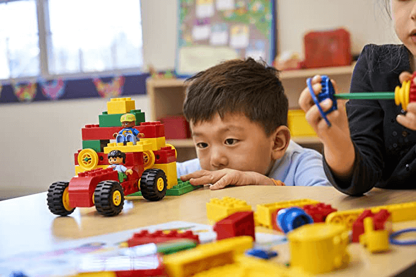
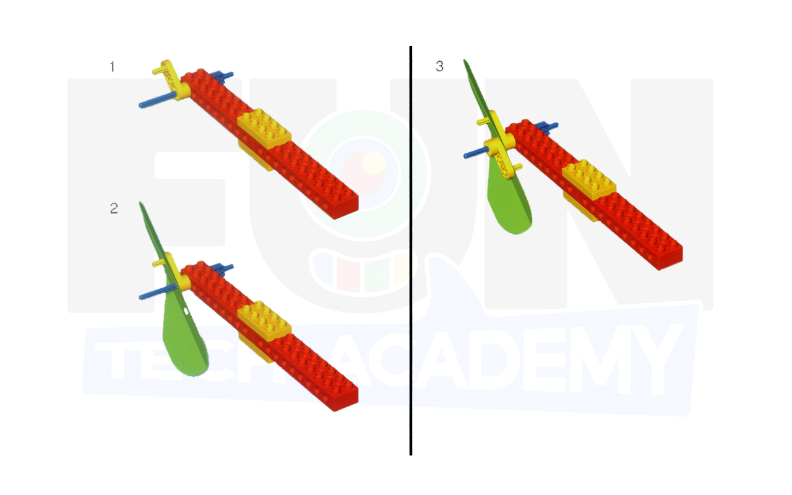

Primeras Máquinas Simples es una herramienta práctica y atractiva que utiliza piezas reales LEGO® para ayudar
a los alumnos de infantil y primaria a descubrir cómo funcionan los engranajes, las palancas, las poleas, las
ruedas y los ejes, al mismo tiempo que adquieren conocimientos básicos sobre ciencias e ingeniería.
El material ha sido diseñado para ser utilizado por niñ@s a partir de 5 años.
Cada una de las lecciones siguen la experimentada metodología de LEGO® Education, el planteamiento
4C: Conectar, Construir, Contemplar y Continuar. Dicha metodología le permitirá avanzar naturalmente
por las actividades.

Las soluciones LEGO Education Science and Technology permiten a los niños más jóvenes comportarse como
jóvenes científicos por medio de herramientas y tareas que promueven la curiosidad científica.
Utilizando nuestras soluciones, se anima a los niños a plantear preguntas del tipo "¿Y si...?". Hacen
predicciones, comprueban el comportamiento de sus modelos, registran y presentan sus hallazgos.
Con las sencillas instrucciones de construcción, el proceso de construcción del niño paso a paso con
indicaciones claras sobre cómo construir cada modelo se hace mucho más sencillo.
Interpretar las instrucciones de construcción 2D y convertirlas en un modelo 3D puede ser una tarea
complicada, y algunos niños podrían necesitar ayuda y apoyo.

Recomendamos que los niños intenten construir los modelos exactamente como aparecen en las instrucciones para asegurarse de que funcionan como se ha pretende para la actividad. Las instrucciones de construcción apoyarán el desarrollo de conocimiento y la comprensión técnica.
Se presentará cada actividad como una historia corta en la que se ofrecerá a los niños la oportunidad de identificar el problema e investigar la mejor forma de llegar a una solución.

Puedemos inspirarnos en la historia que rodea al montaje, en nuestra propia experiencia o en algún evento de actualidad para crear el escenario para los niños.
Siguiendo las instrucciones de construcción, los niños construyen modelos que representan conceptos relacionados con las áreas de aprendizaje clave. Se ofrecen sugerencias para probar y asegurarse de que los modelos funcionan como deben.
Esta parte implica que los niños realicen investigaciones específicas con lo que han construido.
Por medio de sus investigaciones, los niños aprenden a identificar y comparar los resultados de sus pruebas.
Las actividades los introducen a conceptos como la medida, la velocidad, el equilibrio, el movimiento
mecánico, las estructuras, la fuerza y la energía.
Se los anima a describir los resultados de sus investigaciones.
Se le realizarán a los alumnos una serie de preguntas para profundizar en la experiencia del niño y su
comprensión de la investigación.
Esta fase incluye también la posibilidad de comenzar a evaluar el aprendizaje y el progreso de cada niño.
Se ofrecen ideas para realizar más investigaciones basadas en la creatividad y las experiencias anteriores de los niños. Experimentarán, diseñarán adiciones o modificaciones para sus modelos e inventarán juegos relacionados.
Una vez concluida la actividad, se le plantearan al alumno diversos retos para aprovechar al máximo el
aprendizaje adquirido.
Debe alentarse siempre a los niños para que construyan su propia solución a cualquier problema dado.
Si es posible, sacaremos una fotografía de la solución del modelo de los niños y les pediremos que expliquen
cómo han resuelto el problema.
Conservaremos la fotografía como material inspirador para futuros solucionadores del problema.
Después de los 8 primeros montajes guiados, se abre un gran abanico de nuevas construcciones en las que el profesor dará rienda suelta a su creatividad para montar una historia alrededor de cada uno de los montajes con la estructura que hemos visto anteriormente.